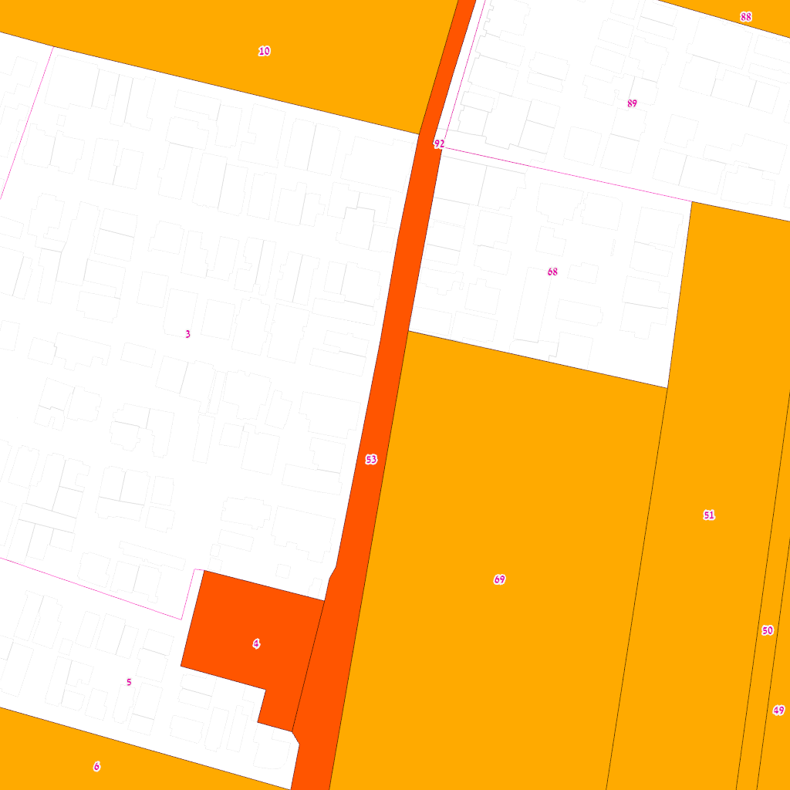
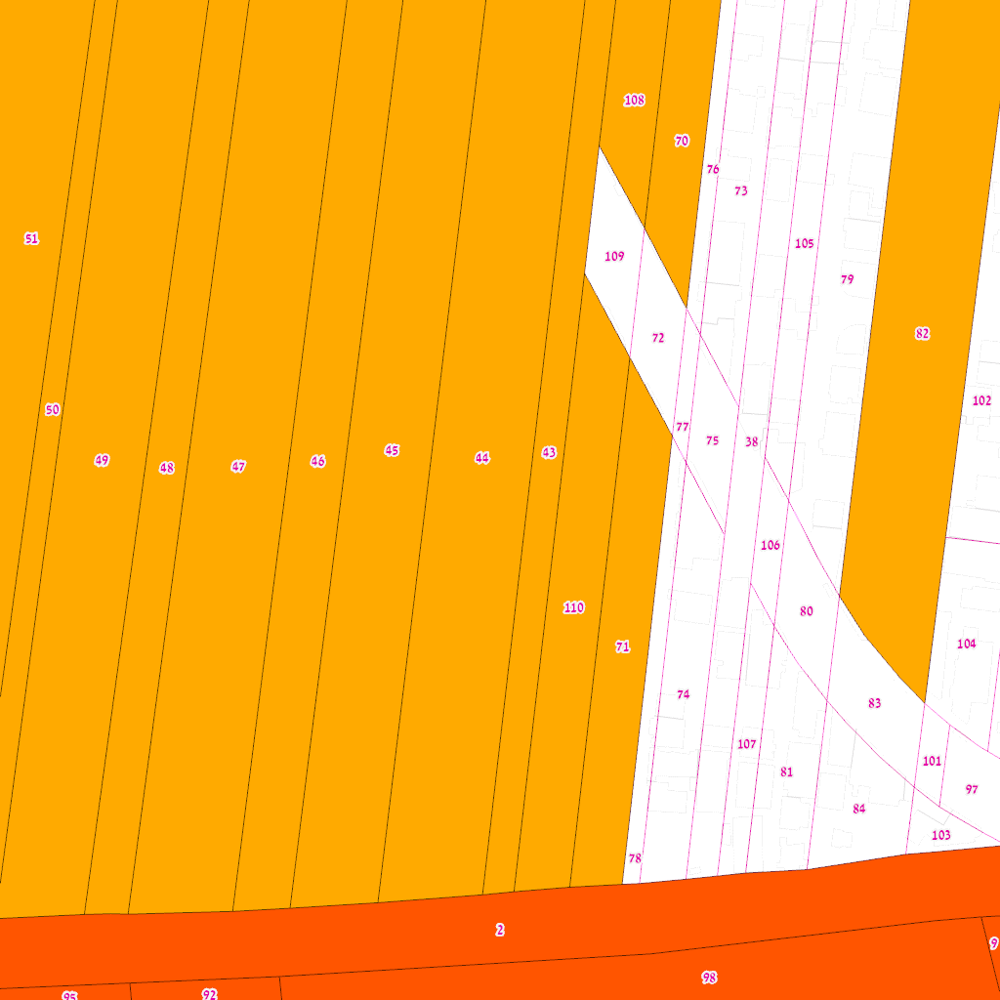
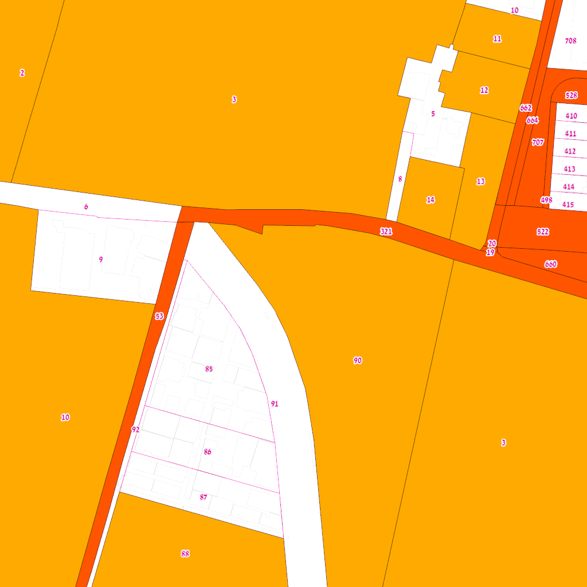
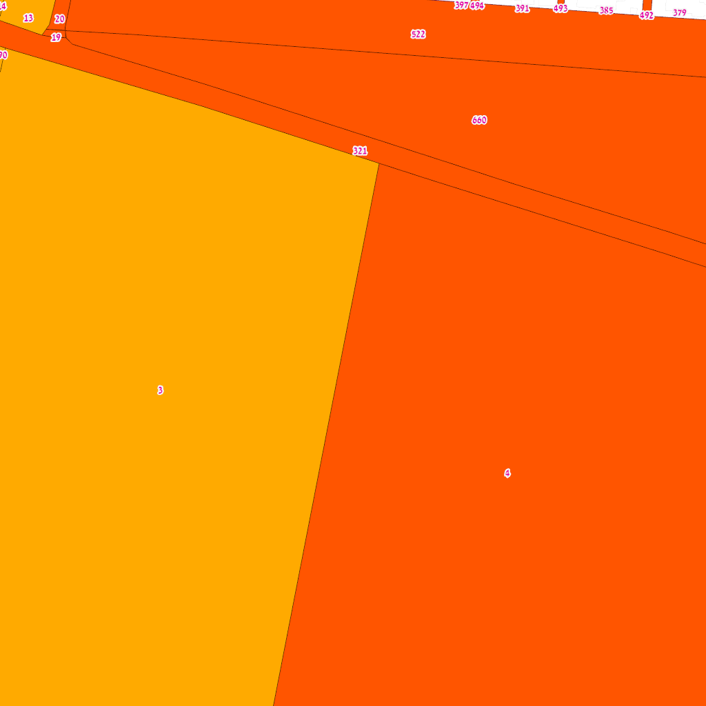
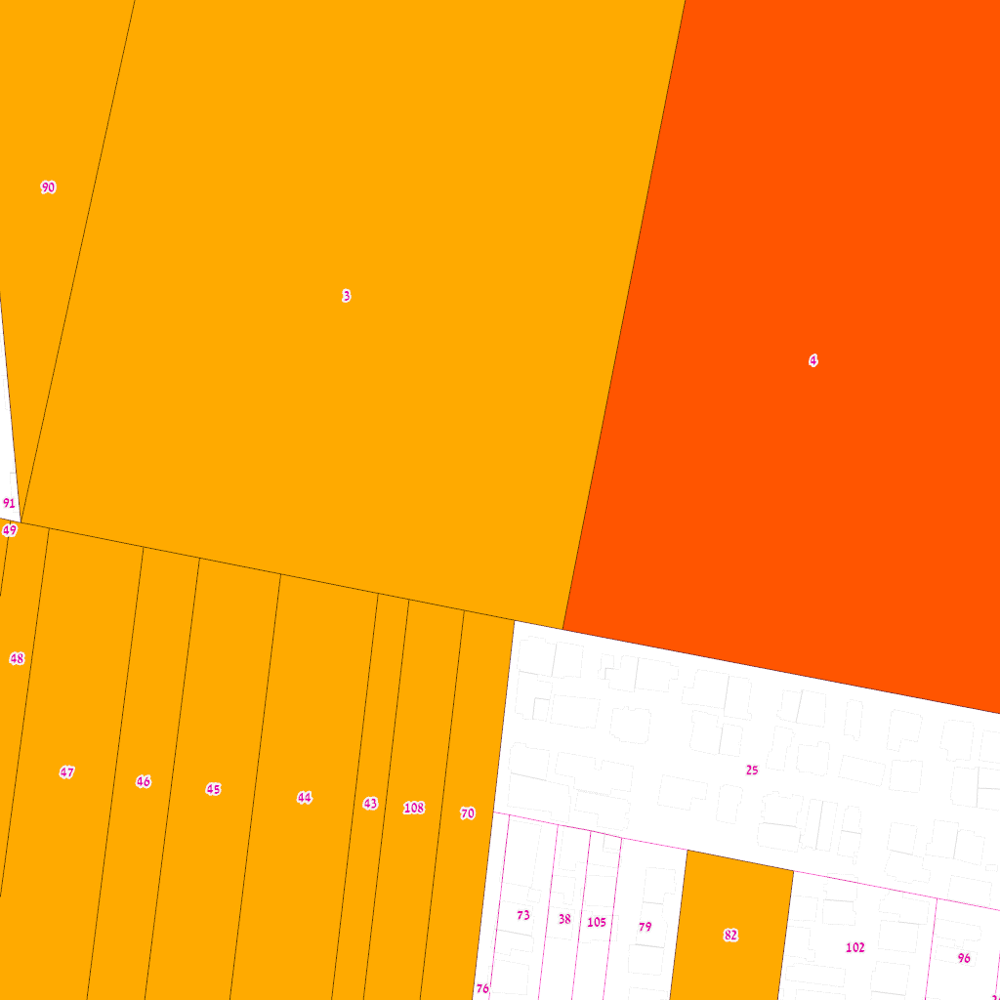

מחקר לסטודיו אדריכלות — בצלאל, אקדמיה לאמנות ועיצוב
מקור: שרת GIS עיריית ת"א | 30.3.2026
מיפוי מבנה הבעלות והפרצלציה בשכונת התקווה כבסיס לפרויקטים אדריכליים ב-5 אתרי סטודיו.
| מידע זמין ב-GIS ✅ GIS | מידע חסר ❌ UNVERIFIED |
|---|---|
| בעלות עירייה (515) | בעלות רמ"י / קק"ל |
| גבולות חלקות ושטחים (524) | זהות בעלים פרטיים |
| ייעודי קרקע (514) | הבחנה בעלות / חכירה |
| היתרי בניה (772) | סטטוס מושע מפורט |
| מבנים וכתובות (513) | הערכות שווי |
| סוג | חלקות | דונם |
|---|---|---|
| בעלות חלקית | 57 | 651.2 |
| בעלות בשלמות | 415 | 477.8 |
| חכירה חלקית | 1 | 4.9 |
| חכירה בשלמות | 10 | 4.1 |
הקדסטר הלאומי (שירות המדידות) מכיל רק חלקות רשומות ("מוסדר") בטאבו. חלקות שקיימות ב-GIS העירוני אך לא בקדסטר הלאומי טרם נרשמו.
| גוש | TLV GIS | GovMap | רק בעירוני | סטטוס |
|---|---|---|---|---|
| 6135 | 318 | 150 | 168 | מוסדר |
| 6978 | 33 | 19 | 14 | מוסדר |
| 6979 | 9 | 5 | 4 | מוסדר |
| 6013 | 5 | 8 | — | מוסדר |
| 6034 | 95 | 31 | 64 | מוסדר |
| 6980 | 16 | 14 | 2 | מוסדר |
ממוצע: 601 מ"ר | חציון: 270 מ"ר
איחוד וחלוקה של חלקת מושע ללא הסכמת בעלים. מכוח תא/5000, שינוי לתא/2215.
| ייעוד | שטח | % |
|---|---|---|
| מגורים ב' | 8,488 | 65.8% |
| דרכים | 3,634 | 28.2% |
| שבילים | 625 | 4.9% |
| מבנ"צ | 158 | 1.2% |
צפיפות: ≥12 יח"ד/ד' | יח"ד מינימלית: 47 מ"ר | חזית מסחרית: דרך ההגנה | עד 5 קומות
✅ אתר 3 (חופף) | ⚠️ אתר 1 (גובל) | מבא"ת
הסדרת מגרשים בשכונת התקווה — חלקות 79, 82, 96, 102, 104-105
✅ אתר 2 (תשבי-ששון) — רה-פרצלציה פעילה בתחום! חלקה 79 בתחום האתר
רה-פרצלציה — חלקות 18, 139. לא חופף עם אתרי סטודיו.
הסדרת מגרשים — רחובות מושיע-שבתאי-נדב-בועז-הרן. חלקות 25-26, 11.155 דונם.
בעלים: מדינת ישראל — אישור רשמי לבעלות רמ"י. חלקה 25 (8,689 מ"ר) באתר 5.
מיקומים מכוילים 30.3.2026
| אתר | גושים | תכניות | ממצא |
|---|---|---|---|
| 1. התקווה-חנוך | 6135, 6979 | 507 (חופף) | רה-פרצלציה בתחום. 84% עירייה |
| 2. תשבי-ששון | 6135 | 4766 + 4765 | שתי תכניות חופפות! רה-פרצלציה + בעלות מדינה |
| 3. דרך ההגנה | 6134-6979 | 507 (חופף) | רה-פרצלציה. 4 גושים, 87% עירייה |
| 4. הורד-פארק | 6134, 6135 | 566א | 100% עירייה. חלקות-על בלבד |
| 5. הורד-יחיעם | 6135 | 4765 (חלקה 25) | בעלות מדינה. 91% עירייה |
כתובות: רחובות התקווה, חנוך, טרפון

| גוש | חלקה | שטח | עירייה | טאבו | מושע? | כתובות |
|---|---|---|---|---|---|---|
| 6979 | 3 | 19070 | — | ✅ | ⚠️ | — |
| 6135 | 3 | 37637 | ✅ | ✅ | 🔶 שכונתית | לבלוב 12, הונא 39, יזהר 16, לפידות 13, יזהר 11 |
| 6979 | 10 | 47239 | ✅ | ❌ | ⚠️ | — |
| 6135 | 44 | 11584 | ✅ | ❌ | ⚠️ | אביטל 21 |
| 6135 | 45 | 9861 | ✅ | ✅ | ⚠️ | — |
| 6135 | 46 | 6685 | ✅ | ❌ | ⚠️ | — |
| 6135 | 47 | 11917 | ✅ | ✅ | ⚠️ | — |
| 6135 | 48 | 4977 | ✅ | ✅ | — | — |
| 6135 | 49 | 11163 | ✅ | ✅ | ⚠️ | — |
| 6135 | 50 | 2847 | ✅ | ✅ | — | — |
| 6135 | 51 | 18100 | ✅ | ❌ | ⚠️ | סמדר 9 |
| 6135 | 53 | 6467 | ✅ | ✅ | ⚠️ | — |
| 6135 | 68 | 4504 | — | ✅ | — | — |
| 6135 | 69 | 33877 | ✅ | ✅ | ⚠️ | — |
| 6135 | 85 | 3279 | — | ✅ | — | — |
| 6135 | 86 | 1801 | — | ✅ | — | — |
| 6135 | 87 | 1792 | — | ✅ | — | — |
| 6135 | 88 | 5064 | ✅ | ✅ | ⚠️ | — |
| 6135 | 89 | 6737 | — | ✅ | ⚠️ | — |
| 6135 | 90 | 12766 | ✅ | ❌ | ⚠️ | — |
| 6135 | 91 | 5680 | — | ✅ | ⚠️ | — |
| 6135 | 92 | 620 | — | ✅ | — | — |
🔶 חלקות-על שכונתיות (6135/3, 6135/4): חלקת מושע שכונתית — חוצה מספר אתרים, אין לייחס לאתר בודד
| ייעוד | מגרשים | שטח |
|---|---|---|
| תחבורה | 37 | 76710 |
| מגורים | 19 | 53978 |
| מסחר | 15 | 16456 |
| מבנים ומוסדות ציבור | 1 | 704 |
כתובות: תשבי 7, 4, 9, 11 | ששון 6, 8, 13

| גוש | חלקה | שטח | עירייה | טאבו | מושע? | כתובות |
|---|---|---|---|---|---|---|
| 6135 | 3 | 37637 | ✅ | ✅ | 🔶 שכונתית | לבלוב 23 |
| 6135 | 4 | 37396 | ✅ | ✅ | 🔶 שכונתית | — |
| 6135 | 25 | 8689 | — | ✅ | ⚠️ | — |
| 6135 | 38 | 3042 | — | ✅ | — | — |
| 6135 | 43 | 3521 | ✅ | ❌ | — | — |
| 6135 | 44 | 11584 | ✅ | ❌ | ⚠️ | אביטל 9, אביטל 21 |
| 6135 | 45 | 9861 | ✅ | ✅ | ⚠️ | הונא 14 |
| 6135 | 46 | 6685 | ✅ | ❌ | ⚠️ | שמחה 12 |
| 6135 | 47 | 11917 | ✅ | ✅ | ⚠️ | — |
| 6135 | 48 | 4977 | ✅ | ✅ | — | קמואל 13, קמואל 15 |
| 6135 | 49 | 11163 | ✅ | ✅ | ⚠️ | קמואל 14 |
| 6135 | 50 | 2847 | ✅ | ✅ | — | — |
| 6135 | 70 | 3233 | ✅ | ✅ | — | שבתאי 21 |
| 6135 | 73 | 2682 | — | ❌ | — | — |
| 6135 | 76 | 869 | — | ❌ | — | — |
| 6135 | 79 | 4365 | — | ✅ | — | — |
| 6135 | 82 | 7707 | ✅ | ✅ | ⚠️ | עברי 22ב |
| 6135 | 89 | 6737 | — | ✅ | ⚠️ | — |
| 6135 | 90 | 12766 | ✅ | ❌ | ⚠️ | — |
| 6135 | 91 | 5680 | — | ✅ | ⚠️ | — |
| 6135 | 102 | 10885 | — | ✅ | ⚠️ | — |
| 6135 | 105 | 1900 | — | ✅ | — | — |
| 6135 | 108 | 3194 | ✅ | ✅ | — | — |
🔶 חלקות-על שכונתיות (6135/3, 6135/4): חלקת מושע שכונתית — חוצה מספר אתרים, אין לייחס לאתר בודד
| ייעוד | מגרשים | שטח |
|---|---|---|
| מגורים | 25 | 76057 |
| תחבורה | 19 | 49600 |
| שטחים פתוחים | 1 | 41066 |
| מבנים ומוסדות ציבור | 2 | 9305 |
| מסחר | 1 | 1037 |
כתובות: ציר דרך ההגנה

| גוש | חלקה | שטח | עירייה | טאבו | מושע? | כתובות |
|---|---|---|---|---|---|---|
| 6978 | 3 | 34892 | ✅ | ❌ | ⚠️ | דרך ההגנה 75 |
| 6135 | 3 | 37637 | ✅ | ✅ | 🔶 שכונתית | יזהר 4, יזהר 1א, אחיעזר 4, אחיעזר 6, הונא 39, יזהר 16, יזהר 11 |
| 6978 | 5 | 1383 | — | ✅ | — | — |
| 6978 | 6 | 2270 | — | ❌ | — | — |
| 6978 | 8 | 275 | — | ✅ | — | — |
| 6979 | 9 | 2820 | — | ❌ | — | — |
| 6979 | 10 | 47239 | ✅ | ❌ | ⚠️ | — |
| 6978 | 13 | 1361 | ✅ | ✅ | — | — |
| 6978 | 14 | 1014 | ✅ | ✅ | — | — |
| 6134 | 19 | 21 | ✅ | ❌ | — | — |
| 6134 | 20 | 123 | ✅ | ❌ | — | — |
| 6135 | 53 | 6467 | ✅ | ✅ | ⚠️ | — |
| 6135 | 85 | 3279 | — | ✅ | — | — |
| 6135 | 86 | 1801 | — | ✅ | — | — |
| 6135 | 87 | 1792 | — | ✅ | — | — |
| 6135 | 88 | 5064 | ✅ | ✅ | ⚠️ | — |
| 6135 | 89 | 6737 | — | ✅ | ⚠️ | — |
| 6135 | 90 | 12766 | ✅ | ❌ | ⚠️ | דרך ההגנה 86א, אצ"ל 3, אצ"ל 5, אצ"ל 3 |
| 6135 | 91 | 5680 | — | ✅ | ⚠️ | — |
| 6135 | 92 | 620 | — | ✅ | — | — |
| 6135 | 321 | 4229 | ✅ | ❌ | — | — |
| 6134 | 522 | 11265 | ✅ | ❌ | ⚠️ | — |
| 6134 | 660 | 15878 | ✅ | ❌ | ⚠️ | — |
| 6134 | 662 | 858 | ✅ | ❌ | — | — |
| 6134 | 664 | 675 | ✅ | ❌ | — | — |
| 6134 | 707 | 772 | ✅ | ❌ | — | — |
🔶 חלקות-על שכונתיות (6135/3, 6135/4): חלקת מושע שכונתית — חוצה מספר אתרים, אין לייחס לאתר בודד
| ייעוד | מגרשים | שטח |
|---|---|---|
| תחבורה | 40 | 60410 |
| מגורים | 15 | 37593 |
| מסחר | 28 | 19888 |
| שטחים פתוחים | 1 | 1673 |
| אחר | 1 | 1639 |
| מבנים ומוסדות ציבור | 1 | 704 |
כתובות: הורד 6, הורד 9

| גוש | חלקה | שטח | עירייה | טאבו | מושע? | כתובות |
|---|---|---|---|---|---|---|
| 6135 | 3 | 37637 | ✅ | ✅ | 🔶 שכונתית | יזהר 4, יזהר 1א, אחיעזר 4, אחיעזר 6, לבלוב 12, יחיעם 26, הונא 39, ורד 10, יחיעם 28, יזהר 16, יזהר 11 |
| 6135 | 4 | 37396 | ✅ | ✅ | 🔶 שכונתית | — |
| 6135 | 90 | 12766 | ✅ | ❌ | ⚠️ | — |
| 6135 | 321 | 4229 | ✅ | ❌ | — | — |
| 6134 | 522 | 11265 | ✅ | ❌ | ⚠️ | — |
| 6134 | 660 | 15878 | ✅ | ❌ | ⚠️ | — |
🔶 חלקות-על שכונתיות (6135/3, 6135/4): חלקת מושע שכונתית — חוצה מספר אתרים, אין לייחס לאתר בודד
| ייעוד | מגרשים | שטח |
|---|---|---|
| שטחים פתוחים | 4 | 43070 |
| מגורים | 11 | 40442 |
| מבנים ומוסדות ציבור | 8 | 17798 |
| תחבורה | 4 | 17272 |
כתובות: ורד 29, יחיעם 31, לבלוב 23

| גוש | חלקה | שטח | עירייה | טאבו | מושע? | כתובות |
|---|---|---|---|---|---|---|
| 6135 | 3 | 37637 | ✅ | ✅ | 🔶 שכונתית | לבלוב 23, לבלוב 12, יחיעם 26, הונא 39, ורד 10, יחיעם 28, יזהר 16, לפידות 13, יזהר 11 |
| 6135 | 4 | 37396 | ✅ | ✅ | 🔶 שכונתית | — |
| 6135 | 25 | 8689 | — | ✅ | ⚠️ | — |
| 6135 | 43 | 3521 | ✅ | ❌ | — | — |
| 6135 | 44 | 11584 | ✅ | ❌ | ⚠️ | אביטל 21 |
| 6135 | 45 | 9861 | ✅ | ✅ | ⚠️ | — |
| 6135 | 46 | 6685 | ✅ | ❌ | ⚠️ | — |
| 6135 | 47 | 11917 | ✅ | ✅ | ⚠️ | — |
| 6135 | 48 | 4977 | ✅ | ✅ | — | — |
| 6135 | 49 | 11163 | ✅ | ✅ | ⚠️ | — |
| 6135 | 70 | 3233 | ✅ | ✅ | — | — |
| 6135 | 90 | 12766 | ✅ | ❌ | ⚠️ | — |
| 6135 | 91 | 5680 | — | ✅ | ⚠️ | — |
| 6135 | 108 | 3194 | ✅ | ✅ | — | — |
🔶 חלקות-על שכונתיות (6135/3, 6135/4): חלקת מושע שכונתית — חוצה מספר אתרים, אין לייחס לאתר בודד
| ייעוד | מגרשים | שטח |
|---|---|---|
| מגורים | 20 | 66133 |
| תחבורה | 14 | 43013 |
| שטחים פתוחים | 1 | 41066 |
| מבנים ומוסדות ציבור | 3 | 11207 |